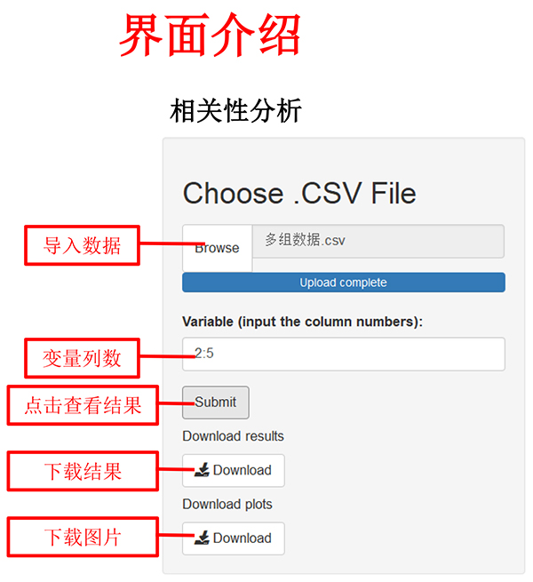

2、计算Spearman相关系数
二、数据格式

注：
1、数据格式为“.csv”
2、数据变量名必须为英文、阿拉伯数字或下划线的组合
3、变量（Variable）需要输入多列，以英文状态下的逗号或冒号分隔，如：2,3,4或2:4
示例如下：

| 相关性分析 | 一、相关性分析方法 | |
| 1、计算Parson相关系数 2、计算Spearman相关系数
二、数据格式 |
||
|  | ||
| |
||
| 注： |
||
| 三、输出结果展示 | ||
| 输出结果包括Pearson相关系数、P值、Spearman相关系数、P值。下载表格中，提供所有变量间的相关系数和相应P值。 示例如下： |